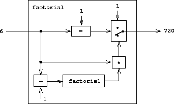

|
Nosso avaliador para Lisp será implementado como um programa Lisp. Pode parecer circular pensar em avaliar os programas Lisp usando um avaliador que é implementado no Lisp. No entanto, a avaliação é um processo, portanto, é apropriado descrever o processo de avaliação usando o Lisp, que, afinal, é a nossa ferramenta para descrever processos.3 Um avaliador escrito na mesma linguagem que avalia é dito ser metacircular.
O avaliador metacircular é essencialmente uma formulação do Scheme do modelo de avaliação do ambiental descrito na seção 3.2.. Lembre-se de que o modelo possui duas partes básicas:
1. Para avaliar uma combinação (uma expressão composta diferente de uma forma especial), avalie as subexpressões e aplique o valor da subexpressão do operador aos valores das subexpressões do operando.
2. Para aplicar um procedimento composto a um conjunto de argumentos, avalie o corpo do procedimento em um novo ambiente. Para construir esse ambiente, estenda a parte do ambiente do objeto de procedimento por um quadro no qual os parâmetros formais do procedimento estejam ligados aos argumentos aos quais o procedimento é aplicado.
Essas duas regras descrevem a essência do processo de avaliação, um ciclo básico no qual as expressões a serem avaliadas em ambientes são reduzidas a procedimentos a serem aplicados aos argumentos, que por sua vez são reduzidas a novas expressões a serem avaliadas em novos ambientes e assim por diante, até chegarmos aos símbolos, cujos valores são pesquisados no ambiente, e aos procedimentos primitivos, que são aplicados diretamente (consulte a figura 4.1). 4 Esse ciclo de avaliação será incorporado pela interação entre os dois procedimentos críticos no avaliador, eval e apply, que são descritos na seção 4.1.1 (veja a figura 4.1)
A implementação do avaliador dependerá de procedimentos que definem a sintaxe das expressões a serem avaliadas. Usaremos abstração de dados para tornar o avaliador independente da representação da linguagem. Por exemplo, em vez de comprometer-se com a escolha de que uma atribuição seja representada por uma lista que começa com o símbolo set! usamos um predicado abstrato assignment? para testar uma atribuição e usamos seletores abstratos assignment-variable e assignment-value para acessar as partes de uma atribuição. A implementação de expressões será descrita em detalhes na seção 4.1.2. Existem também operações, descritas na seção 4.1.3, que especificam a representação de procedimentos e ambientes. Por exemplo, make-procedure constrói procedimentos compostos, lookup-variable-value acessa os valores das variáveis e apply-primitive-procedure aplica um procedimento primitivo a uma determinada lista de argumentos.
O processo de avaliação pode ser descrito como a interação entre dois procedimentos: eval e apply.
Eval toma como argumento uma expressão e um ambiente. Classifica a expressão e direciona sua avaliação. Eval está estruturado como uma análise de caso do tipo sintático da expressão a ser avaliada. Para manter o procedimento geral, expressamos a determinação do tipo de uma expressão de maneira abstrata, sem comprometer nenhuma a uma representação específica para os vários tipos de expressões. Cada tipo de expressão possui um predicado que a testa e um meio abstrato para selecionar suas partes. Esta sintaxe abstrata facilita ver como podemos alterar a sintaxe da linguagem usando o mesmo avaliador, mas com uma coleção diferente de procedimentos de sintaxe.
Aqui está a definição de eval:
(define (eval exp env)
(cond ((self-evaluating? exp) exp)
((variable? exp) (lookup-variable-value exp env))
((quoted? exp) (text-of-quotation exp))
((assignment? exp) (eval-assignment exp env))
((definition? exp) (eval-definition exp env))
((if? exp) (eval-if exp env))
((lambda? exp)
(make-procedure (lambda-parameters exp)
(lambda-body exp)
env))
((begin? exp)
(eval-sequence (begin-actions exp) env))
((cond? exp) (eval (cond->if exp) env))
((application? exp)
(apply (eval (operator exp) env)
(list-of-values (operands exp) env)))
(else
(error "Unknown expression type -- EVAL" exp))))
Para maior clareza, eval foi implementado como uma análise de caso usando cond. A desvantagem disso é que nosso procedimento lida com apenas alguns tipos de expressões distinguíveis e nenhum novo pode ser definido sem editar a definição de eval. Na maioria das implementações do Lisp, o envio do tipo de expressão é feito em um estilo orientado a dados. Isso permite que um usuário adicione novos tipos de expressões que eval podem distinguir, sem modificar a definição de eval em si. (Veja exercício 4.3.).
Apply usa dois argumentos, um procedimento e uma lista de argumentos aos quais o procedimento deve ser aplicado. Apply classifica os procedimentos em dois tipos: chama apply-primitive-procedure para aplicar primitivas; aplica procedimentos compostos avaliando sequencialmente as expressões que compõem o corpo do procedimento. O ambiente para a avaliação do corpo de um procedimento composto é construído estendendo o ambiente base realizado pelo procedimento para incluir um quadro que liga os parâmetros do procedimento aos argumentos aos quais o procedimento deve ser aplicado. Aqui está a definição de apply:
(define (apply procedure arguments)
(cond ((primitive-procedure? procedure)
(apply-primitive-procedure procedure arguments))
((compound-procedure? procedure)
(eval-sequence
(procedure-body procedure)
(extend-environment
(procedure-parameters procedure)
arguments
(procedure-environment procedure))))
(else
(error
"Unknown procedure type -- APPLY" procedure))))
Quando eval processa uma aplicação de procedimento, ele usa list-of-values para produzir a lista de argumentos aos quais o procedimento deve ser aplicado. List-of-values toma como argumento os operandos da combinação. Ele avalia cada operando e retorna uma lista dos valores correspondentes:5
(define (list-of-values exps env)
(if (no-operands? exps)
'()
(cons (eval (first-operand exps) env)
(list-of-values (rest-operands exps) env))))
Eval-if avalia a parte predicada de uma expressão if no ambiente fornecido. Se o resultado for verdadeiro, eval-if avalia o consequente; caso contrário, avalia a alternativa:
(define (eval-if exp env)
(if (true? (eval (if-predicate exp) env))
(eval (if-consequent exp) env)
(eval (if-alternative exp) env)))
O uso de true? no eval-if destaca a questão da conexão entre uma linguagem implementada e uma linguagem de implementação. O if-predicate é avaliado na linguagem que é implementado e, portanto, gera um valor nessa linguagem. O predicado do interpretador true? converte esse valor em um valor que pode ser testado pelo if na linguagem de implementação: A representação metacircular da verdade pode não ser a mesma do Scheme subjacente.6
Eval-sequence é usado por apply para avaliar a sequência de expressões em um corpo de procedimento e por eval para avaliar a sequência de expressões em uma expressão begin. Ele toma como argumento uma sequência de expressões e um ambiente e avalia as expressões na ordem em que elas ocorrem. O valor retornado é o valor da expressão final.
(define (eval-sequence exps env)
(cond ((last-exp? exps) (eval (first-exp exps) env))
(else (eval (first-exp exps) env)
(eval-sequence (rest-exps exps) env))))
O procedimento a seguir trata das atribuições para variáveis. Ele chama eval para encontrar o valor a ser atribuído e transmite a variável e o valor resultante para set-variable-value! para ser instalado no ambiente designado.
(define (eval-assignment exp env)
(set-variable-value! (assignment-variable exp)
(eval (assignment-value exp) env)
env)
'ok)
Definições de variáveis são tratadas de maneira semelhante.7
(define (eval-definition exp env)
(define-variable! (definition-variable exp)
(eval (definition-value exp) env)
env)
'ok)
Escolhemos aqui retornar o símbolo ok como o valor de uma atribuição ou definição.8
Exercício 4.1. Observe que não podemos dizer se o avaliador metacircular avalia operandos da esquerda para a direita ou da direita para a esquerda. Sua ordem de avaliação é herdada do Lisp subjacente: se os argumentos para cons no list-of-values forem avaliados da esquerda para a direita, list-of-values avaliará operandos da esquerda para a direita; e se os argumentos para cons são avaliados da direita para a esquerda, list-of-values avaliará operandos da direita para a esquerda.
Escreva uma versão de list-of-values que avalia operandos da esquerda para a direita, independentemente da ordem de avaliação no Lisp subjacente. Escreva também uma versão de list-of-values que avalia operandos da direita para a esquerda.
O avaliador lembra o programa de diferenciação simbólica discutido na seção 2.3.2. Ambos os programas operam em expressões simbólicas. Nos dois programas, o resultado da operação em uma expressão composta é determinado operando recursivamente nas partes da expressão e combinando os resultados de uma maneira que depende do tipo da expressão. Nos dois programas usamos abstração de dados para dissociar as regras gerais de operação dos detalhes de como as expressões são representadas. No programa de diferenciação, isso significava que o mesmo procedimento de diferenciação poderia lidar com expressões algébricas na forma de prefixo, na forma de infixo ou de alguma outra forma. Para o avaliador, isso significa que a sintaxe da linguagem que é avaliada é determinada apenas pelos procedimentos que classificam e extraem partes de expressões.
Aqui está a especificação da sintaxe da nossa linguagem:
¤ Os únicos itens de autoavaliação são números e sequências de caracteres:
(define (self-evaluating? exp)
(cond ((number? exp) true)
((string? exp) true)
(else false)))
¤ Variáveis são representadas por símbolos:
(define (variable? exp) (symbol? exp))
¤ As citações possuem a forma (quote <text-of-quotation>):9
(define (quoted? exp)
(tagged-list? exp 'quote))
(define (text-of-quotation exp) (cadr exp))
Quoted? é definido em termos do procedimento tagged-list?, que identifica listas que começam com um símbolo designado:
(define (tagged-list? exp tag)
(if (pair? exp)
(eq? (car exp) tag)
false))
¤ As atribuições possuem a forma (set! <var> <value>):
(define (assignment? exp)
(tagged-list? exp 'set!))
(define (assignment-variable exp) (cadr exp))
(define (assignment-value exp) (caddr exp))
¤ As definições possuem a forma
(define <var> <value>)
ou a forma
(define (<var> <parameter1> ... <parametern>)
<body>)
A última forma (definição de procedimento padrão) é o açúcar sintático para
(define <var>
(lambda (<parameter1> ... <parametern>)
<body>))
Os procedimentos de sintaxe correspondentes são os seguintes:
(define (definition? exp)
(tagged-list? exp 'define))
(define (definition-variable exp)
(if (symbol? (cadr exp))
(cadr exp)
(caadr exp)))
(define (definition-value exp)
(if (symbol? (cadr exp))
(caddr exp)
(make-lambda (cdadr exp) ; formal parameters
(cddr exp)))) ; body
¤ Expressões lambda são listas que começam com o símbolo lambda:
(define (lambda? exp) (tagged-list? exp 'lambda))
(define (lambda-parameters exp) (cadr exp))
(define (lambda-body exp) (cddr exp))
Também fornecemos um construtor para as expressões lambda, que é usado por definition-value, acima:
(define (make-lambda parameters body)
(cons 'lambda (cons parameters body)))
¤ Os condicionais começam com if e ter um predicado, um consequente e uma alternativa (opcional). Se a expressão não tiver parte alternativa, forneceremos false como alternativa.10
(define (if? exp) (tagged-list? exp 'if))
(define (if-predicate exp) (cadr exp))
(define (if-consequent exp) (caddr exp))
(define (if-alternative exp)
(if (not (null? (cdddr exp)))
(cadddr exp)
'false))
Também fornecemos um construtor para expressões if, a serem usadas por cond->if para transformar expressões cond em expressões if:
(define (make-if predicate consequent alternative)
(list 'if predicate consequent alternative))
¤ Begin empacota uma sequência de expressões em uma única expressão. Incluímos operações de sintaxe em expressões begin para extrair a sequência real da expressão begin, bem como seletores que retornam a primeira expressão e o restante das expressões na sequência.11
(define (begin? exp) (tagged-list? exp 'begin))
(define (begin-actions exp) (cdr exp))
(define (last-exp? seq) (null? (cdr seq)))
(define (first-exp seq) (car seq))
(define (rest-exps seq) (cdr seq))
Também incluímos um construtor sequence->exp (para uso por cond->if) que transforma uma sequência em uma única expressão, usando begin se necessário:
(define (sequence->exp seq)
(cond ((null? seq) seq)
((last-exp? seq) (first-exp seq))
(else (make-begin seq))))
(define (make-begin seq) (cons 'begin seq))
¤ Uma aplicação de procedimento é qualquer expressão composta que não seja um dos tipos de expressão acima. O car da expressão é o operador, e o cdr é a lista de operandos:
(define (application? exp) (pair? exp))
(define (operator exp) (car exp))
(define (operands exp) (cdr exp))
(define (no-operands? ops) (null? ops))
(define (first-operand ops) (car ops))
(define (rest-operands ops) (cdr ops))
Algumas formas especiais em nossa linguagem podem ser definidas em termos de expressões envolvendo outras formas especiais, em vez de serem implementadas diretamente. Um exemplo é cond, que pode ser implementado como um aninhamento de expressões if. Por exemplo, podemos reduzir o problema de avaliar a expressão
(cond ((> x 0) x)
((= x 0) (display 'zero) 0)
(else (- x)))
ao problema de avaliar a seguinte expressão envolvendo as expressões if e begin:
(if (> x 0)
x
(if (= x 0)
(begin (display 'zero)
0)
(- x)))
Implementando a avaliação de cond dessa maneira, simplifica o avaliador, pois reduz o número de formas especiais para as quais o processo de avaliação deve ser especificado explicitamente.
Incluímos procedimentos de sintaxe que extraem as partes de uma expressão cond e um procedimento cond->if que transforma expressões cond em expressões if. Uma análise de caso começa com cond e possui uma lista de cláusulas de ação de predicado. Uma cláusula é uma else cláusula se seu predicado é o símbolo else.12
(define (cond? exp) (tagged-list? exp 'cond))
(define (cond-clauses exp) (cdr exp))
(define (cond-else-clause? clause)
(eq? (cond-predicate clause) 'else))
(define (cond-predicate clause) (car clause))
(define (cond-actions clause) (cdr clause))
(define (cond->if exp)
(expand-clauses (cond-clauses exp)))
(define (expand-clauses clauses)
(if (null? clauses)
'false ; no else clause
(let ((first (car clauses))
(rest (cdr clauses)))
(if (cond-else-clause? first)
(if (null? rest)
(sequence->exp (cond-actions first))
(error "ELSE clause isn't last -- COND->IF"
clauses))
(make-if (cond-predicate first)
(sequence->exp (cond-actions first))
(expand-clauses rest))))))
Expressões (como cond) que escolhemos implementar como transformações sintáticas são chamadas expressões derivadas. Expressões let também são expressões derivadas (consulte o exercício 4.6)13
Exercício 4.2. Louis Reasoner planeja reordenar o cond cláusulas em eval para que a cláusula para aplicações de procedimento apareça antes da cláusula para atribuições. Ele argumenta que isso tornará o interpretador mais eficiente: como os programas geralmente contêm mais aplicações do que atribuições, definições etc. eval normalmente verifica menos cláusulas que o original eval antes de identificar o tipo de uma expressão.
a. O que há de errado com o plano de Louis? (Dica: O que o avaliador de Louis fará com a expressão (define x 3)?)
b. Louis está chateado que seu plano não funcionou. Ele está disposto a fazer tudo para que seu avaliador reconheça as aplicações de procedimentos antes de verificar a maioria dos outros tipos de expressões. Ajude-o alterando a sintaxe da linguagem avaliada para que as aplicações de procedimento comecem com call. Por exemplo, em vez de (factorial 3) agora teremos que escrever (call factorial 3) e em vez de (+ 1 2) teremos que escrever (call + 1 2).
Exercício 4.3. Reescrever eval para que o envio seja feito no estilo orientado a dados. Compare isso com o procedimento de diferenciação orientada a dados do exercício 2.73. (Você pode usar o car de uma expressão composta como o tipo da expressão, conforme apropriado para a sintaxe implementada nesta seção).
Exercício 4.4. Lembre-se das definições das formas especiais and e or do capítulo 1:
Instalar and e or como novas formas especiais para o avaliador, definindo procedimentos de sintaxe e procedimentos de avaliação adequados eval-and e eval-or. Como alternativa, mostre como implementar and e or como expressões derivadas.
Exercício 4.5. O Scheme permite uma sintaxe adicional para cond cláusulas, (<test> => <recipient>). Se <test> é avaliado como um valor verdadeiro e, em seguida, <recipient> é avaliado. Seu valor deve ser um procedimento de um argumento; esse procedimento é chamado no valor do <test>, e o resultado é retornado como o valor da expressão cond. Por exemplo
(cond ((assoc 'b '((a 1) (b 2))) => cadr)
(else false))
retorna 2. Modifique o manuseio de cond para que ele suporte essa sintaxe estendida.
Exercício 4.6. Expressões Let são expressões derivadas, pois
(let ((<var1> <exp1>) ... (<varn> <expn>))
<body>)
é equivalente a
((lambda (<var1> ... <varn>)
<body>)
<exp1>
⋮
<expn>)
Implementar uma transformação sintática let->combination que reduz a avaliação de expressões let para avaliar combinações do tipo mostrado acima e adicione a cláusula apropriada às expressões eval para lidar com let.
Exercício 4.7. Let* é similar a let, exceto que as ligações do let variáveis são executadas sequencialmente da esquerda para a direita e cada ligação é feita em um ambiente no qual todas as ligações anteriores são visíveis. Por exemplo
(let* ((x 3)
(y (+ x 2))
(z (+ x y 5)))
(* x z))
retorna 39. Explique como uma expressão let* pode ser reescrita como um conjunto de expressões let e escreva um procedimento let*->nested-lets que realiza essa transformação. Se já implementamos let (exercício 4.6) e queremos estender o avaliador para lidar com let*, é suficiente adicionar uma cláusula a eval cuja ação é
(eval (let*->nested-lets exp) env)
ou devemos expandir explicitamente let* em termos de expressões não derivadas?
Exercício 4.8. “Nomeado let”É uma variante de let que possui a forma
(let <var> <bindings> <body>)
O <bindings> e <body> são tão comuns let, exceto que <var> está ligado dentro de <body> a um procedimento cujo corpo é <body> e cujos parâmetros são as variáveis no <bindings>. Assim, pode-se executar repetidamente o <body> chamando o procedimento chamado <var>. Por exemplo, o procedimento iterativo de Fibonacci (seção 1.2.2) pode ser reescrito usando o nome let do seguinte modo:
(define (fib n)
(let fib-iter ((a 1)
(b 0)
(count n))
(if (= count 0)
b
(fib-iter (+ a b) a (- count 1)))))
Modificar let->combination do exercício 4.6 para também apoiar o let nomeado.
Exercício 4.9. Muitas linguagens suportam uma variedade de construções de iteração, como do, for, while e until. No Scheme, os processos iterativos podem ser expressos em termos de chamadas de procedimentos comuns; portanto, construções especiais de iteração não fornecem ganho essencial em potência computacional. Por outro lado, essas construções são frequentemente convenientes. Projete algumas construções de iteração, dê exemplos de seu uso e mostre como implementá-las como expressões derivadas.
Exercício 4.10. Usando a abstração de dados, conseguimos escrever um procedimento eval independente da sintaxe específica da linguagem a ser avaliado. Para ilustrar isso, projete e implemente uma nova sintaxe para o Scheme modificando os procedimentos nesta seção, sem alterar eval ou apply.
Além de definir a sintaxe externa das expressões, a implementação do avaliador também deve definir as estruturas de dados que o avaliador manipula internamente, como parte da execução de um programa, como a representação de procedimentos e ambientes e a representação de verdadeiro e falso.
Para condicionais, aceitamos que algo seja verdadeira que não seja a explícita false objeto.
(define (true? x)
(not (eq? x false)))
(define (false? x)
(eq? x false))
Para lidar com primitivos, assumimos que temos disponíveis os seguintes procedimentos:
Esses mecanismos para lidar com primitivas são descritos mais detalhadamente na seção 4.1.4.
Procedimentos compostos são construídos a partir de parâmetros, corpos de procedimentos e ambientes usando o construtor make-procedure:
(define (make-procedure parameters body env)
(list 'procedure parameters body env))
(define (compound-procedure? p)
(tagged-list? p 'procedure))
(define (procedure-parameters p) (cadr p))
(define (procedure-body p) (caddr p))
(define (procedure-environment p) (cadddr p))
O avaliador precisa de operações para manipular ambientes. Conforme explicado na seção 3.2., um ambiente é uma sequência de quadros, em que cada quadro é uma tabela de ligações que associa variáveis a seus valores correspondentes. Usamos as seguintes operações para manipular ambientes:
Para implementar essas operações, representamos um ambiente como uma lista de quadros. O ambiente fechado de um ambiente é o cdr da lista. O ambiente vazio é simplesmente a lista vazia.
(define (enclosing-environment env) (cdr env))
(define (first-frame env) (car env))
(define the-empty-environment '())
Cada quadro de um ambiente é representado como um par de listas: uma lista das variáveis ligadas nesse quadro e uma lista dos valores associados.14
(define (make-frame variables values)
(cons variables values))
(define (frame-variables frame) (car frame))
(define (frame-values frame) (cdr frame))
(define (add-binding-to-frame! var val frame)
(set-car! frame (cons var (car frame)))
(set-cdr! frame (cons val (cdr frame))))
Para estender um ambiente por um novo quadro que associa variáveis a valores, criamos um quadro que consiste na lista de variáveis e na lista de valores, e associamos isso ao ambiente. Sinalizamos um erro se o número de variáveis não corresponder ao número de valores.
(define (extend-environment vars vals base-env)
(if (= (length vars) (length vals))
(cons (make-frame vars vals) base-env)
(if (< (length vars) (length vals))
(error "Too many arguments supplied" vars vals)
(error "Too few arguments supplied" vars vals))))
Para procurar uma variável em um ambiente, examinamos a lista de variáveis no primeiro quadro. Se encontrarmos a variável desejada, retornamos o elemento correspondente na lista de valores. Se não encontrarmos a variável no quadro atual, pesquisaremos o ambiente anexo e assim por diante. Se atingirmos o ambiente vazio, sinalizamos um erro de “unbound variable”.
(define (lookup-variable-value var env)
(define (env-loop env)
(define (scan vars vals)
(cond ((null? vars)
(env-loop (enclosing-environment env)))
((eq? var (car vars))
(car vals))
(else (scan (cdr vars) (cdr vals)))))
(if (eq? env the-empty-environment)
(error "Unbound variable" var)
(let ((frame (first-frame env)))
(scan (frame-variables frame)
(frame-values frame)))))
(env-loop env))
Para definir uma variável para um novo valor em um ambiente especificado, procuramos a variável, assim como em lookup-variable-value e altere o valor correspondente quando o encontrarmos.
(define (set-variable-value! var val env)
(define (env-loop env)
(define (scan vars vals)
(cond ((null? vars)
(env-loop (enclosing-environment env)))
((eq? var (car vars))
(set-car! vals val))
(else (scan (cdr vars) (cdr vals)))))
(if (eq? env the-empty-environment)
(error "Unbound variable -- SET!" var)
(let ((frame (first-frame env)))
(scan (frame-variables frame)
(frame-values frame)))))
(env-loop env))
Para definir uma variável, procuramos no primeiro quadro uma ligação para a variável e alteramos a ligação, se ela existir (assim como em set-variable-value!) Se não existir essa ligação, anexamos um ao primeiro quadro.
(define (define-variable! var val env)
(let ((frame (first-frame env)))
(define (scan vars vals)
(cond ((null? vars)
(add-binding-to-frame! var val frame))
((eq? var (car vars))
(set-car! vals val))
(else (scan (cdr vars) (cdr vals)))))
(scan (frame-variables frame)
(frame-values frame))))
O método descrito aqui é apenas uma das muitas maneiras plausíveis de representar ambientes. Como usamos a abstração de dados para isolar o restante do avaliador da escolha detalhada da representação, poderíamos alterar a representação do ambiente, se quiséssemos. (Veja exercício 4.11). Em um sistema Lisp com qualidade de produção, a velocidade das operações do ambiente do avaliador – especialmente a de pesquisa variável – possui um grande impacto no desempenho do sistema. A representação descrita aqui, apesar de conceitualmente simples, não é eficiente e normalmente não seria usada em um sistema de produção.15
Exercício 4.11. Em vez de representar um quadro como um par de listas, podemos representar um quadro como uma lista de ligações, em que cada ligação é um par nome-valor. Reescreva as operações do ambiente para usar essa representação alternativa.
Exercício 4.12. Os procedimentos set-variable-value!, define-variable! e lookup-variable-value pode ser expresso em termos de procedimentos mais abstratos para percorrer a estrutura do ambiente. Defina abstrações que capturam os padrões comuns e redefine os três procedimentos em termos dessas abstrações.
Exercício 4.13. O Scheme permite criar novas ligações para variáveis por meio de define, mas não fornece nenhuma maneira de se livrar de ligações. Implementar para o avaliador uma forma especial make-unbound! que remove a ligação de um determinado símbolo do ambiente em que a expressão make-unbound! é avaliada. Este problema não está completamente especificado. Por exemplo, devemos remover apenas a ligação no primeiro quadro do ambiente? Complete a especificação e justifique as escolhas que fizer.
Dado o avaliador, temos em nossas mãos uma descrição (expressa em Lisp) do processo pelo qual as expressões Lisp são avaliadas. Uma vantagem de expressar o avaliador como um programa é que podemos executá-lo. Isso nos fornece, executando no Lisp, um modelo de trabalho de como o próprio Lisp avalia expressões. Isso pode servir como uma estrutura para experimentar as regras de avaliação, como faremos mais adiante neste capítulo.
Nosso programa avaliador reduz expressões, em última análise, à aplicação de procedimentos primitivos. Portanto, tudo o que precisamos para executar o avaliador é criar um mecanismo que chame o sistema Lisp subjacente para modelar a aplicação de procedimentos primitivos.
Deve haver uma ligação para cada nome de procedimento primitivo, para que, quando eval avalia o operador de uma aplicação de uma primitiva, ele encontrará um objeto para o qual passar apply. Montamos assim um ambiente global que associa objetos exclusivos aos nomes dos procedimentos primitivos que podem aparecer nas expressões que avaliaremos. O ambiente global também inclui ligações para os símbolos true e false, para que eles possam ser usados como variáveis nas expressões a serem avaliadas.
(define (setup-environment)
(let ((initial-env
(extend-environment (primitive-procedure-names)
(primitive-procedure-objects)
the-empty-environment)))
(define-variable! 'true true initial-env)
(define-variable! 'false false initial-env)
initial-env))
(define the-global-environment (setup-environment))
Não importa como representamos os objetos do procedimento primitivo, desde que apply pode identificá-los e aplicá-los usando os procedimentos primitive-procedure? e apply-primitive-procedure. Optamos por representar um procedimento primitivo como uma lista que começa com o símbolo primitive e contendo um procedimento no Lisp subjacente que implementa essa primitiva.
(define (primitive-procedure? proc)
(tagged-list? proc 'primitive))
(define (primitive-implementation proc) (cadr proc))
O ambiente de configuração obterá os nomes primitivos e os procedimentos de implementação de uma lista:16
(define primitive-procedures
(list (list 'car car)
(list 'cdr cdr)
(list 'cons cons)
(list 'null? null?)
<more primitives>
))
(define (primitive-procedure-names)
(map car
primitive-procedures))
(define (primitive-procedure-objects)
(map (lambda (proc) (list 'primitive (cadr proc)))
primitive-procedures))
Para aplicar um procedimento primitivo, simplesmente aplicamos o procedimento de implementação aos argumentos, usando o sistema Lisp subjacente:17
(define (apply-primitive-procedure proc args)
(apply-in-underlying-scheme
(primitive-implementation proc) args))
Por conveniência na execução do avaliador metacircular, fornecemos uma laço do controlador que modela o laço leitura-avaliação-impressão do sistema Lisp subjacente. Ele imprime um prompt, lê uma expressão de entrada, avalia essa expressão no ambiente global e imprime o resultado. Precedemos cada resultado impresso por um prompt de saída para distinguir o valor da expressão de outra saída que pode ser impressa.18
(define input-prompt ";;; M-Eval input:")
(define output-prompt ";;; M-Eval value:")
(define (driver-loop)
(prompt-for-input input-prompt)
(let ((input (read)))
(let ((output (eval input the-global-environment)))
(announce-output output-prompt)
(user-print output)))
(driver-loop))
(define (prompt-for-input string)
(newline) (newline) (display string) (newline))
(define (announce-output string)
(newline) (display string) (newline))
Utilizamos um procedimento de impressão especial, user-print, para evitar a impressão do ambiente como parte de um procedimento composto, que pode ser uma lista muito longa (ou até conter ciclos).
(define (user-print object)
(if (compound-procedure? object)
(display (list 'compound-procedure
(procedure-parameters object)
(procedure-body object)
'<procedure-env>))
(display object)))
Agora, tudo o que precisamos fazer para executar o avaliador é iniciar o ambiente global e iniciar o laço do controlador. Aqui está uma amostra de interação:
(define the-global-environment (setup-environment))
(driver-loop)
;;; M-Eval input:
(define (append x y)
(if (null? x)
y
(cons (car x)
(append (cdr x) y))))
;;; M-Eval value:
ok
;;; M-Eval input:
(append '(a b c) '(d e f))
;;; M-Eval value:
(a b c d e f)
Exercício 4.14. Eva Lu Ator e Louis Reasoner estão fazendo experimentos com o avaliador metacircular. Eva digita na definição de map, e executa alguns programas de teste que o utilizam. Eles funcionam bem. Louis, por outro lado, instalou a versão do sistema do map como uma primitiva para o avaliador metacircular. Quando ele tenta, tudo dá muito errado. Explique por que Louis map falha, apesar do trabalho de Eva.
Ao pensar em um programa Lisp que avalia expressões de Lisp, uma analogia pode ser útil. Uma visão operacional do significado de um programa é que um programa é uma descrição de uma máquina abstrata (talvez infinitamente grande). Por exemplo, considere o programa familiar para calcular fatoriais:
(define (factorial n)
(if (= n 1)
1
(* (factorial (- n 1)) n)))
Podemos considerar esse programa como a descrição de uma máquina que contém peças que diminuem, multiplicam e testam a igualdade, com uma chave de duas posições e outra máquina fatorial. (A máquina fatorial é infinita, pois contém outra máquina fatorial dentro dela). A figura 4.2 é um diagrama de fluxo para a máquina fatorial, mostrando como as peças são conectadas.
|  |
De maneira semelhante, podemos considerar o avaliador como uma máquina muito especial que usa como entrada uma descrição de uma máquina. Dada essa entrada, o avaliador se configura para emular a máquina descrita. Por exemplo, se alimentarmos nosso avaliador, a definição de factorial, como mostrado na figura 4.3., o avaliador poderá calcular os fatoriais.
 |
Nessa perspectiva, nosso avaliador é visto como uma máquina universal. Imita outras máquinas quando estas são descritas como programas Lisp.19 Isso é impressionante. Tente imaginar um avaliador análogo para circuitos elétricos. Este seria um circuito que recebe como entrada um sinal que codifica os planos para algum outro circuito, como um filtro. Dada essa entrada, o avaliador de circuito se comportaria como um filtro com a mesma descrição. Tal circuito elétrico universal é quase inimaginavelmente complexo. É notável que o avaliador do programa seja um programa bastante simples.20
Outro aspecto marcante do avaliador é que ele atua como uma ponte entre os objetos de dados que são manipulados por nossa linguagem de programação e a própria linguagem de programação. Imagine que o programa avaliador (implementado no Lisp) esteja em execução e que um usuário digitaria expressões no avaliador e observando os resultados. Da perspectiva do usuário, uma expressão de entrada como (* x x) é uma expressão na linguagem de programação que o avaliador deve executar. Da perspectiva do avaliador, no entanto, a expressão é simplesmente uma lista (nesse caso, uma lista de três símbolos: *, x e x) que deve ser manipulado de acordo com um conjunto de regras bem definido.
O fato de os programas do usuário serem os dados do avaliador não precisa ser uma fonte de confusão. De fato, às vezes é conveniente ignorar essa distinção e dar ao usuário a capacidade de avaliar explicitamente um objeto de dados como uma expressão Lisp, criando eval disponível para uso em programas. Muitos dialetos Lisp fornecem um procedimento primitivo eval que usa como argumento uma expressão e um ambiente e avalia a expressão relativa ao ambiente.21 Portanto,
(eval '(* 5 5) user-initial-environment)
e
(eval (cons '* (list 5 5)) user-initial-environment)
ambos retornarão 25.22
Exercício 4.15. Dado um procedimento de um argumento p e um objeto a, p é dito “parar” em a se avaliasse a expressão (p a) retorna um valor (em vez de terminar com uma mensagem de erro ou em execução para sempre). Mostre que é impossível escrever um procedimento halts? que determina corretamente se p para a para qualquer procedimento p e objeto a. Use o seguinte raciocínio: Se você teve esse procedimento halts?, você pode implementar o seguinte programa:
(define (run-forever) (run-forever))
(define (try p)
(if (halts? p p)
(run-forever)
'halted))
Agora considere avaliar a expressão (try try) e mostre que qualquer resultado possível (parar ou correr para sempre) viola o comportamento pretendido halts?.23
Nosso modelo de avaliação do ambiente e nosso avaliador metacircular executam as definições em sequência, estendendo o ambiente a uma definição por vez. Isso é particularmente conveniente para o desenvolvimento de programas interativos, nos quais o programador precisa misturar livremente a aplicação de procedimentos com a definição de novos procedimentos. No entanto, se pensarmos cuidadosamente nas definições internas usadas para implementar a estrutura de blocos (introduzida na seção 1.1.8), descobriremos que a extensão nome-a-nome do ambiente pode não ser a melhor maneira de definir variáveis locais.
Considere um procedimento com definições internas, como
(define (f x)
(define (even? n)
(if (= n 0)
true
(odd? (- n 1))))
(define (odd? n)
(if (= n 0)
false
(even? (- n 1))))
<rest of body of f>)
Nossa intenção aqui é que o nome odd? no corpo do procedimento even? deve se referir ao procedimento odd? que é definido depois even?. O escopo do nome odd? é todo o corpo de f, não apenas a parte do corpo de f começando no ponto em que o define para odd? ocorre. De fato, quando consideramos que odd? é definido em termos de even? – de modo que even? e odd? são procedimentos mutuamente recursivos – vemos que a única interpretação satisfatória dos dois define s é considerá-los como se os nomes even? e odd? sejam adicionados ao ambiente simultaneamente. De maneira mais geral, na estrutura de blocos, o escopo de um nome local é todo o corpo do procedimento no qual o define é avaliada.
Por acaso, nosso interpretador avaliará as chamadas para f corretamente, mas por um motivo “acidental”: Como as definições dos procedimentos internos são as primeiras, nenhuma chamada para esses procedimentos será avaliada até que todos eles tenham sido definidos. Consequentemente, odd? terá sido definido pelo tempo even? é executado. De fato, nosso mecanismo de avaliação sequencial fornecerá o mesmo resultado que um mecanismo que implemente diretamente a definição simultânea para qualquer procedimento no qual as definições internas são as primeiras em um corpo e a avaliação das expressões de valor para as variáveis definidas não usa realmente nenhuma das variáveis definidas. (Para um exemplo de um procedimento que não obedece a essas restrições, para que a definição sequencial não seja equivalente à definição simultânea, consulte o exercício 4.19).24
No entanto, existe uma maneira simples de tratar definições para que nomes definidos internamente tenham escopo verdadeiramente concorrente – basta criar todas as variáveis locais que estarão no ambiente atual antes de avaliar qualquer uma das expressões de valor. Uma maneira de fazer isso é através de uma transformação de sintaxe em expressões lambda. Antes de avaliar o corpo de uma expressão lambda, “analisamos” e eliminamos todas as definições internas do corpo. As variáveis definidas internamente serão criadas com um let e, em seguida, configuradas para seus valores por atribuição. Por exemplo, o procedimento
(lambda <vars>
(define u <e1>)
(define v <e2>)
<e3>)
seria transformado em
(lambda <vars>
(let ((u '*unassigned*)
(v '*unassigned*))
(set! u <e1>)
(set! v <e2>)
<e3>))
Onde *unassigned* é um símbolo especial que faz com que procurar uma variável sinalize um erro se for feita uma tentativa de usar o valor da variável ainda não atribuída.
Uma estratégia alternativa para verificar definições internas é mostrada no exercício 4.18. Diferente da transformação mostrada acima, isso impõe a restrição de que os valores das variáveis definidas possam ser avaliados sem o uso de nenhum dos valores das variáveis.25
Exercício 4.16. Neste exercício, implementamos o método descrito para interpretar definições internas. Assumimos que o avaliador suporta let (veja exercício 4.6)
a. Mude lookup-variable-value (seção 4.1.3) para sinalizar um erro se o valor encontrado for o símbolo *unassigned*.
b. Escreva um procedimento scan-out-defines que pega um corpo de procedimento e retorna um corpo equivalente que não possui definições internas, fazendo a transformação descrita acima.
c. Instale scan-out-defines no interpretador, seja em make-procedure ou em procedure-body (veja a seção 4.1.3) Qual lugar é melhor? Por quê?
Exercício 4.17. Desenhe diagramas do ambiente em vigor ao avaliar a expressão <e3> no procedimento no texto, comparando como isso será estruturado quando as definições forem interpretadas sequencialmente e como será estruturado se as definições forem varridas conforme descrito. Por que há um quadro extra no programa transformado? Explique por que essa diferença na estrutura do ambiente nunca pode fazer diferença no comportamento de um programa correto. Crie uma maneira de fazer com que o interpretador implemente a regra de escopo “concorrente” para definições internas sem construir o quadro extra.
Exercício 4.18. Considere uma estratégia alternativa para varrer definições que traduza o exemplo no texto para
(lambda <vars>
(let ((u '*unassigned*)
(v '*unassigned*))
(let ((a <e1>)
(b <e2>))
(set! u a)
(set! v b))
<e3>))
Aqui a e b devem representar novos nomes de variáveis, criados pelo interpretador, que não aparecem no programa do usuário. Considere o procedimento solve da seção 3.5.4:
(define (solve f y0 dt)
(define y (integral (delay dy) y0 dt))
(define dy (stream-map f y))
y)
Este procedimento funcionará se as definições internas forem varridas, conforme mostrado neste exercício? E se eles forem varridos conforme mostrado no texto? Explique.
Exercício 4.19. Ben Bitdiddle, Alyssa P. Hacker e Eva Lu Ator estão discutindo sobre o resultado desejado da avaliação da expressão
(let ((a 1))
(define (f x)
(define b (+ a x))
(define a 5)
(+ a b))
(f 10))
Ben afirma que o resultado deve ser obtido usando a regra sequencial para define: b é definido como 11, então a é definido como 5, então o resultado é 16. A Alyssa contesta que a recursão mútua requer a regra de escopo concorrente para definições de procedimentos internos e que não é razoável tratar nomes de procedimentos de maneira diferente de outros nomes. Assim, ela defende o mecanismo implementado no exercício 4.16. Isso levaria a a sendo não atribuído no momento em que o valor para b deve ser calculado. Portanto, na visão de Alyssa, o procedimento deve produzir um erro. Eva tem uma terceira opinião. Ela diz que se as definições de a e b são realmente feitos para serem concorrentes, então o valor 5 para a deve ser usado na avaliação b. Portanto, na opinião de Eva a deve ser 5, b deve ser 15 e o resultado deve ser 20. Quais (se houver) desses pontos de vista você apoia? Você pode criar uma maneira de implementar definições internas para que elas se comportem como Eva prefere?26
Exercício 4.20. Como as definições internas parecem sequenciais, mas na verdade são simultâneas, algumas pessoas preferem evitá-las completamente e usam a forma especial letrec em vez de. Letrec parece let, portanto, não surpreende que as variáveis ligadas sejam ligadas simultaneamente e tenham o mesmo escopo uma da outra. O procedimento de amostra f acima pode ser escrito sem definições internas, mas com exatamente o mesmo significado, como
(define (f x)
(letrec ((even?
(lambda (n)
(if (= n 0)
true
(odd? (- n 1)))))
(odd?
(lambda (n)
(if (= n 0)
false
(even? (- n 1))))))
<rest of body of f>))
Expressões letrec, que possuem a forma
(letrec ((<var1> <exp1>) ... (<varn> <expn>))
<body>)
são uma variação de let em que as expressões <expk> que fornecem os valores iniciais para as variáveis <vark> são avaliados em um ambiente que inclui todos os letrec ligações. Isso permite a recursão nas ligações, como a recursão mútua de even? e odd? no exemplo acima, ou a avaliação de 10 fatorial com
(letrec ((fact
(lambda (n)
(if (= n 1)
1
(* n (fact (- n 1)))))))
(fact 10))
a. Implemente letrec como uma expressão derivada, transformando uma expressão letrec em uma expressão let, como mostrado no texto acima ou no exercício 4.18. Ou seja, as variáveis letrec devem ser criadas com um let e depois receber seus valores com set!.
b. Louis Reasoner está confuso com toda essa confusão sobre definições internas. Do jeito que ele vê, se você não gosta de usar define dentro de um procedimento, você pode apenas usar let. Ilustre o que está falho em seu raciocínio, desenhando um diagrama de ambiente que mostra o ambiente em que o <resto do corpo de f> é avaliado durante a avaliação da expressão (f 5) com f definido como neste exercício. Desenhe um diagrama de ambiente para a mesma avaliação, mas com let no lugar de letrec na definição de f.
Exercício 4.21. Surpreendentemente, a intuição de Louis em exercício 4.20 está correta. É realmente possível especificar procedimentos recursivos sem usar letrec (ou mesmo define), embora o método para fazer isso seja muito mais sutil do que Louis imaginava. A expressão a seguir calcula 10 fatorial aplicando um procedimento fatorial recursivo:27
((lambda (n)
((lambda (fact)
(fact fact n))
(lambda (ft k)
(if (= k 1)
1
(* k (ft ft (- k 1)))))))
10)
a. Verifique (avaliando a expressão) que isso realmente calcula fatoriais. Crie uma expressão análoga para calcular números de Fibonacci.
b. Considere o seguinte procedimento, que inclui definições internas mutuamente recursivas:
(define (f x)
(define (even? n)
(if (= n 0)
true
(odd? (- n 1))))
(define (odd? n)
(if (= n 0)
false
(even? (- n 1))))
(even? x))
Preencha as expressões ausentes para concluir uma definição alternativa de f, que não usa definições internas nem letrec:
(define (f x)
((lambda (even? odd?)
(even? even? odd? x))
(lambda (ev? od? n)
(if (= n 0) true (od? <??> <??> <??>)))
(lambda (ev? od? n)
(if (= n 0) false (ev? <??> <??> <??>)))))
O avaliador implementado acima é simples, mas é muito ineficiente, pois a análise sintática das expressões é intercalada com sua execução. Assim, se um programa é executado várias vezes, sua sintaxe é analisada várias vezes. Considere, por exemplo, avaliar (factorial 4) usando a seguinte definição de factorial:
(define (factorial n)
(if (= n 1)
1
(* (factorial (- n 1)) n)))
Cada vez factorial é chamado, o avaliador deve determinar que o corpo é uma expressão if e extraia o predicado. Somente então ele poderá avaliar o predicado e despachar seu valor. Cada vez que avalia a expressão (* (factorial (- n 1)) n) ou as subexpressões (factorial (- n 1)) e (- n 1), o avaliador deve executar a análise de caso em eval para determinar que a expressão é uma aplicação e deve extrair seu operador e operandos. Essa análise é cara. Realizá-lo repetidamente é um desperdício.
Podemos transformar o avaliador em significativamente mais eficiente, organizando para que a análise sintática seja realizada apenas uma vez.28 Dividimos eval, que leva uma expressão e um ambiente, em duas partes. O procedimento analyze pega apenas a expressão. Ele realiza a análise sintática e retorna um novo procedimento, o procedimento de execução, que encapsula o trabalho a ser executado na execução da expressão analisada. O procedimento de execução usa um ambiente como argumento e conclui a avaliação. Isso economiza trabalho, pois analyze será chamado apenas uma vez em uma expressão, enquanto o procedimento de execução pode ser chamado várias vezes.
Com a separação em análise e execução, eval agora se torna
(define (eval exp env)
((analyze exp) env))
O resultado da chamada analyze é o procedimento de execução a ser aplicado ao ambiente. O procedimento analyze é a mesma análise de caso realizada pelo original eval da seção 4.1.1, exceto que os procedimentos para os quais enviamos executam apenas análise, não avaliação completa:
(define (analyze exp)
(cond ((self-evaluating? exp)
(analyze-self-evaluating exp))
((quoted? exp) (analyze-quoted exp))
((variable? exp) (analyze-variable exp))
((assignment? exp) (analyze-assignment exp))
((definition? exp) (analyze-definition exp))
((if? exp) (analyze-if exp))
((lambda? exp) (analyze-lambda exp))
((begin? exp) (analyze-sequence (begin-actions exp)))
((cond? exp) (analyze (cond->if exp)))
((application? exp) (analyze-application exp))
(else
(error "Unknown expression type -- ANALYZE" exp))))
Aqui está o procedimento mais simples de análise sintática, que lida com expressões de autoavaliação. Ele retorna um procedimento de execução que ignora o argumento do ambiente e apenas retorna a expressão:
(define (analyze-self-evaluating exp)
(lambda (env) exp))
Para uma expressão citada, podemos obter um pouco de eficiência extraindo o texto da citação apenas uma vez, na fase de análise, e não na fase de execução.
(define (analyze-quoted exp)
(let ((qval (text-of-quotation exp)))
(lambda (env) qval)))
A busca de um valor variável ainda deve ser feita na fase de execução, pois isso depende do conhecimento do ambiente.29
(define (analyze-variable exp)
(lambda (env) (lookup-variable-value exp env)))
Analyze-assignment também deve adiar a configuração da variável até a execução, quando o ambiente foi fornecido. No entanto, o fato da expressão assignment-value poder ser analisada (recursivamente) durante a análise é um grande ganho em eficiência, pois a expressão assignment-value agora será analisada apenas uma vez. O mesmo vale para definições.
(define (analyze-assignment exp)
(let ((var (assignment-variable exp))
(vproc (analyze (assignment-value exp))))
(lambda (env)
(set-variable-value! var (vproc env) env)
'ok)))
(define (analyze-definition exp)
(let ((var (definition-variable exp))
(vproc (analyze (definition-value exp))))
(lambda (env)
(define-variable! var (vproc env) env)
'ok)))
Para expressões if, extraímos e analisamos o predicado, consequente e alternativo no momento da análise.
(define (analyze-if exp)
(let ((pproc (analyze (if-predicate exp)))
(cproc (analyze (if-consequent exp)))
(aproc (analyze (if-alternative exp))))
(lambda (env)
(if (true? (pproc env))
(cproc env)
(aproc env)))))
Analisando a expressão lambda também alcança um grande ganho em eficiência: analisamos o corpo lambda apenas uma vez, apesar de procedimentos resultantes da avaliação do lambda pode ser aplicado várias vezes.
(define (analyze-lambda exp)
(let ((vars (lambda-parameters exp))
(bproc (analyze-sequence (lambda-body exp))))
(lambda (env) (make-procedure vars bproc env))))
Análise de uma sequência de expressões (como em um begin ou o corpo de uma expressão lambda) está mais envolvida.30 Cada expressão na sequência é analisada, produzindo um procedimento de execução. Esses procedimentos de execução são combinados para produzir um procedimento de execução que usa um ambiente como argumento e chama sequencialmente cada procedimento de execução individual com o ambiente como argumento.
(define (analyze-sequence exps)
(define (sequentially proc1 proc2)
(lambda (env) (proc1 env) (proc2 env)))
(define (loop first-proc rest-procs)
(if (null? rest-procs)
first-proc
(loop (sequentially first-proc (car rest-procs))
(cdr rest-procs))))
(let ((procs (map analyze exps)))
(if (null? procs)
(error "Empty sequence -- ANALYZE"))
(loop (car procs) (cdr procs))))
Para analisar uma aplicação, analisamos o operador e os operandos e construímos um procedimento de execução que chama o procedimento de execução do operador (para obter o procedimento real a ser aplicado) e os procedimentos de execução do operando (para obter os argumentos reais). Passamos então para execute-application, que é o análogo de apply na seção 4.1.1. Execute-application é diferente de apply em que o corpo do procedimento para um procedimento composto já foi analisado, portanto não há necessidade de fazer análises adicionais. Em vez disso, apenas chamamos o procedimento de execução do corpo no ambiente estendido.
(define (analyze-application exp)
(let ((fproc (analyze (operator exp)))
(aprocs (map analyze (operands exp))))
(lambda (env)
(execute-application (fproc env)
(map (lambda (aproc) (aproc env))
aprocs)))))
(define (execute-application proc args)
(cond ((primitive-procedure? proc)
(apply-primitive-procedure proc args))
((compound-procedure? proc)
((procedure-body proc)
(extend-environment (procedure-parameters proc)
args
(procedure-environment proc))))
(else
(error
"Unknown procedure type -- EXECUTE-APPLICATION"
proc))))
Nosso novo avaliador usa as mesmas estruturas de dados, procedimentos de sintaxe e procedimentos de suporte em tempo de execução das seções 4.1.2, 4.1.3 e 4.1.4.
Exercício 4.22. Estenda o avaliador nesta seção para apoiar a forma especial let. (Veja exercício 4.6).
Exercício 4.23. Alyssa P. Hacker não entende por que analyze-sequence precisa ser tão complicado. Todos os outros procedimentos de análise são transformações diretas dos procedimentos de avaliação correspondentes (ou eval cláusulas) na seção 4.1.1. Ela esperava analyze-sequence para ficar assim:
(define (analyze-sequence exps)
(define (execute-sequence procs env)
(cond ((null? (cdr procs)) ((car procs) env))
(else ((car procs) env)
(execute-sequence (cdr procs) env))))
(let ((procs (map analyze exps)))
(if (null? procs)
(error "Empty sequence -- ANALYZE"))
(lambda (env) (execute-sequence procs env))))
Eva Lu Ator explica a Alyssa que a versão no texto faz mais do trabalho de avaliar uma sequência no momento da análise. O procedimento de execução de sequência de Alyssa, em vez de incluir as chamadas para os procedimentos de execução individuais, percorre os procedimentos para chamá-los: De fato, embora as expressões individuais na sequência tenham sido analisadas, a própria sequência não foi.
Compare as duas versões do analyze-sequence. Por exemplo, considere o caso comum (típico dos corpos dos procedimentos) em que a sequência possui apenas uma expressão. Que trabalho o procedimento de execução produzido pelo programa de Alyssa fará? E o procedimento de execução produzido pelo programa no texto acima? Como as duas versões se comparam para uma sequência com duas expressões?
Exercício 4.24. Projete e realize alguns experimentos para comparar a velocidade do avaliador metacircular original com a versão nesta seção. Use seus resultados para estimar a fração de tempo gasto em análise versus execução para vários procedimentos.
3 Mesmo assim, permanecerão aspectos importantes do processo de avaliação que não são elucidados pelo nosso avaliador. O mais importante deles são os mecanismos detalhados pelos quais os procedimentos chamam outros procedimentos e retornam valores aos seus chamadores. Abordaremos essas questões no capítulo 5, onde examinaremos mais de perto o processo de avaliação implementando o avaliador como uma simples máquina de registradores.
4 Se nos concedermos a capacidade de aplicar primitivas, então o que resta para implementar no avaliador? O trabalho do avaliador não é especificar as primitivas da linguagem, mas fornecer o tecido conjuntivo – os meios de combinação e os meios de abstração – que liga uma coleção de primitivas para formar uma linguagem. Especificamente:
5 Poderíamos ter simplificado o application? cláusula em eval usando map (e estipulando que operands retorna uma lista) em vez de escrever um procedimento list-of-values explícito. Optamos por não usar map aqui para enfatizar o fato de que o o avaliador pode ser implementado sem o uso de procedimentos de ordem superior (e, portanto, pode ser escrito em uma linguagem que não possui procedimentos de ordem superior), mesmo que a linguagem que ela suporta inclua procedimentos de ordem superior.
6 Nesse caso, a linguagem que é implementada e a linguagem de implementação são as mesmas. Contemplação do significado de true? aqui produz expansão da consciência sem o abuso de substâncias.
7 Esta implementação de define ignora um problema sutil no tratamento de definições internas, embora funcione corretamente na maioria dos casos. Veremos qual é o problema e como resolvê-lo na seção 4.1.6.
8 Como dissemos quando introduzimos define e set!, esses valores dependem da implementação no Scheme – ou seja, o implementador pode escolher qual valor retornar.
9 Conforme mencionado na seção 2.3.1, o avaliador vê uma expressão entre aspas como uma lista que começa com quote, mesmo se a expressão for digitada com aspas. Por exemplo, a expressão 'a seria visto pelo avaliador como (quote a). Veja o exercício 2.55.
10 O valor de uma a expressão if quando o predicado é falso e não há alternativa especificada no Scheme; escolhemos aqui para torná-lo falso. Apoiaremos o uso das variáveis true e false em expressões a serem avaliadas ligando-as no ambiente global. Veja a seção 4.1.4.
11 Esses seletores para uma lista de expressões – e os correspondentes para uma lista de operandos – não são destinados a uma abstração de dados. Eles são introduzidos como nomes mnemônicos para as operações básicas da lista, a fim de facilitar o entendimento do avaliador de controle explícito na seção 5.4.
12 O valor de uma expressão cond quando todos os predicados são falsos e não há uma cláusula else não especificada no Scheme; escolhemos aqui para torná-lo falso.
13 Os sistemas práticos do Lisp fornecem um mecanismo que permite ao usuário adicionar novas expressões derivadas e especificar sua implementação como transformações sintáticas sem modificar o avaliador. Essa transformação definida pelo usuário é chamada de macro. Embora seja fácil adicionar um mecanismo elementar para definir macros, a linguagem resultante apresenta sutis problemas de conflito de nome. Tem havido muita pesquisa sobre mecanismos de definição macro que não causam essas dificuldades. Veja, por exemplo, Kohlbecker 1986, Clinger e Rees 1991 e Hanson 1991.
14 Os quadros não são realmente uma abstração de dados no seguinte código: Set-variable-value! e define-variable! usam set-car! para modificar diretamente os valores em um quadro. O objetivo dos procedimentos de estrutura é facilitar a leitura dos procedimentos de manipulação do ambiente.
15 A desvantagem dessa representação (bem como a variante no exercício 4.11) é que o avaliador pode precisar pesquisar muitos quadros para encontrar a ligação para uma determinada variável. (Essa abordagem é chamada de ligação profunda). Uma maneira de evitar essa ineficiência é fazer uso de uma estratégia chamada endereçamento léxico, que será discutido na seção 5.5.6.
16 Qualquer procedimento definido no Lisp subjacente pode ser usado como um primitivo para o avaliador metacircular. O nome de uma primitiva instalada no avaliador não precisa ser igual ao nome de sua implementação no Lisp subjacente; os nomes são os mesmos aqui, pois o avaliador metacircular implementa o próprio Scheme. Assim, por exemplo, poderíamos colocar (list 'first car) ou (list 'square (lambda (x) (* x x))) na lista de primitive-procedures.
17Apply-in-underlying-scheme é o procedimento apply que usamos nos capítulos anteriores. O procedimento apply do avaliador metacircular (seção 4.1.1) modela o funcionamento desta primitiva. Tendo dois procedimentos diferentes chamados apply leva a um problema técnico na execução do avaliador metacircular, pois a definição da avaliação do avaliador metacircular apply irá mascarar a definição da primitiva. Uma maneira de contornar isso é renomear o apply metacircular para evitar conflito com o nome do procedimento primitivo. Em vez disso, assumimos que salvamos uma referência ao objeto subjacente apply fazendo
(define apply-in-underlying-scheme apply)
antes de definir o apply metacircular. Isso nos permite acessar a versão original do apply sob um nome diferente.
18 O procedimento primitivo read aguarda a entrada do usuário e retorna a próxima expressão completa digitada. Por exemplo, se o usuário digitar (+ 23 x), read retorna uma lista de três elementos contendo o símbolo +, o número 23 e o símbolo x. Se o usuário digitar 'x, read retorna uma lista de dois elementos contendo o símbolo quote e o símbolo x.
19 O fato de as máquinas serem descritas no Lisp não é essencial. Se atribuirmos ao nosso avaliador um programa Lisp que se comporta como um avaliador para outra linguagem, digamos C, o avaliador Lisp emulará o avaliador C, que por sua vez pode emular qualquer máquina descrita como um programa C. Da mesma forma, escrever um avaliador Lisp em C produz um programa C que pode executar qualquer programa Lisp. A ideia profunda aqui é que qualquer avaliador pode emular outro. Assim, a noção de “o que pode, em princípio, ser computado” (ignorando os aspectos práticos do tempo e da memória necessários) é independente da linguagem ou do computador e, em vez disso, reflete uma noção subjacente de computabilidade. Isso foi demonstrado pela primeira vez de maneira clara por Alan M. Turing (1912-1954), cujo artigo de 1936 lançou as bases da teoria Ciência da Computação. No artigo, Turing apresentou um modelo computacional simples – agora conhecido como Máquina de Turing – e argumentou que qualquer “processo eficaz” pode ser formulado como um programa para essa máquina. (Este argumento é conhecido como Tese de Church-Turing). Turing implementou uma máquina universal, ou seja, uma máquina de Turing que se comporta como avaliadora de programas de máquinas de Turing. Ele usou essa estrutura para demonstrar que existem problemas bem colocados que não podem ser computados pelas máquinas de Turing (consulte o exercício 4.15) e, por implicação, não pode ser formulado como “processos efetivos”. Turing também fez contribuições fundamentais para a ciência da computação prática. Por exemplo, ele inventou a ideia de estruturação de programas usando sub-rotinas de uso geral. Veja Hodges 1983 para uma biografia de Turing.
20 Algumas pessoas acham contra-intuitivo que um avaliador, implementado por um procedimento relativamente simples, possa emular programas que são mais complexos que o próprio avaliador. A existência de uma máquina avaliadora universal é uma propriedade profunda e maravilhosa da computação. Teoria da recursão, um ramo da lógica matemática, preocupa-se com os limites lógicos da computação. O belo livro de Douglas Hofstadter Gödel, Escher, Bach (1979) explora algumas dessas ideias.
21 Aviso: este eval primitivo não é idêntico ao procedimento eval que implementamos na seção 4.1.1, pois usa o ambientes reais do Scheme em vez das estruturas de ambiente de amostra que construímos na seção 4.1.3. Esses ambientes reais não podem ser manipulados pelo usuário como listas comuns; eles devem ser acessados via eval ou outras operações especiais. Da mesma forma, o apply primitivo que vimos anteriormente não é idêntico ao metacircular apply, pois usa procedimentos reais do Scheme em vez dos objetos de procedimento que construímos nas seções 4.1.3 e 4.1.4.
22 A implementação MIT do Scheme inclui eval, bem como um símbolo user-initial-environment que está ligado ao ambiente inicial no qual as expressões de entrada do usuário são avaliadas.
23 Embora tenhamos estipulado que halts? recebe um objeto de procedimento, observe que esse raciocínio ainda se aplica mesmo se halts? pode obter acesso ao texto do procedimento e seu ambiente. Este é o célebre Teorema da Parada, que deu o primeiro exemplo claro de uma não computável problema, ou seja, uma tarefa bem colocada que não pode ser executada como um procedimento computacional.
24 Deseja que os programas não dependam desse mecanismo de avaliação é o motivo da observação “a gerência não é responsável” na nota de rodapé28. do capítulo 1. Ao insistir que as definições internas venham primeiro e não se usem enquanto as definições fossem avaliadas, o padrão IEEE para o Scheme deixa aos implementadores alguma opção no mecanismo usado para avaliar essas definições. A escolha de uma regra de avaliação em vez de outra aqui pode parecer um pequeno problema, afetando apenas a interpretação de programas “mal formados”. No entanto, veremos na seção 5.5.6 que a mudança para um modelo de escopo concorrente para definições internas evita algumas dificuldades desagradáveis que de outra forma surgiriam na implementação de um compilador.
25 O padrão IEEE para Scheme permite diferentes estratégias de implementação, especificando que cabe ao programador obedecer a essa restrição, e não a implementação para aplicá-la. Algumas implementações do Scheme, incluindo MIT Scheme, use a transformação mostrada acima. Portanto, alguns programas que não obedecem a essa restrição serão executados de fato nessas implementações.
26 Os implementadores do MIT do Scheme apoiam a Alyssa pelos seguintes motivos: Eva é, em princípio, correta – as definições devem ser consideradas simultâneas. Mas parece difícil implementar um mecanismo geral e eficiente que faça o que Eva exige. Na ausência de tal mecanismo, é melhor gerar um erro nos casos difíceis de definições simultâneas (noção de Alyssa) do que produzir uma resposta incorreta (como Ben o faria).
27 Este exemplo ilustra um truque de programação para formular procedimentos recursivos sem usar define. O truque mais geral desse tipo é o operador Y, que pode ser usado para fornecer uma implementação pura de“cálculo-λ” de recursão. (Veja Stoy 1977 para detalhes sobre o cálculo lambda, e Gabriel 1988 para uma exposição do operador Y no Scheme).
28 Essa técnica é parte integrante do processo de compilação, que discutiremos no capítulo 5. Jonathan Rees escreveu um interpretador Scheme como esse em 1982 para o projeto T (Rees e Adams 1982). Marc Feeley (1986) (veja também Feeley e Lapalme 1987) inventou independentemente essa técnica em sua tese de mestrado.
29 Há, no entanto, uma parte importante da pesquisa variável que pode ser feito como parte da análise sintática. Como mostraremos na seção 5.5.6, pode-se determinar a posição na estrutura do ambiente em que o valor da variável será encontrado, evitando assim a necessidade de varrer o ambiente em busca da entrada que corresponde à variável.
30 Veja exercício 4.23 para obter algumas dicas sobre o processamento de sequências.